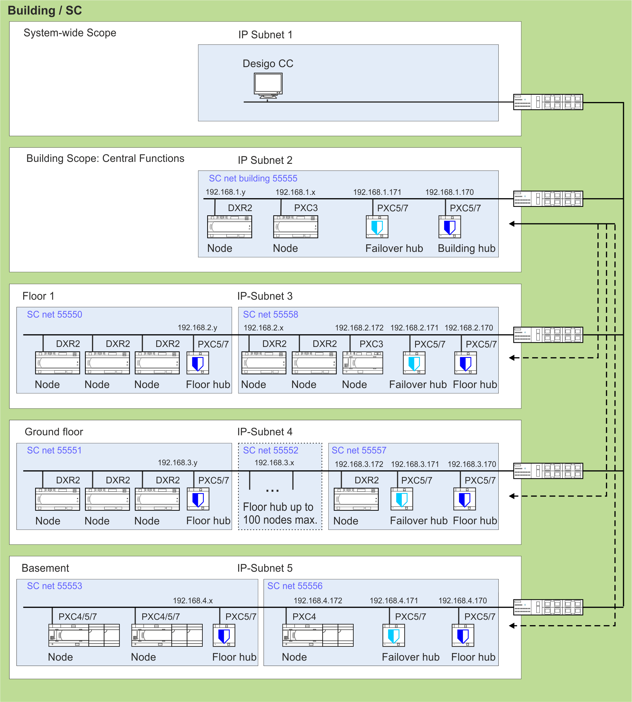
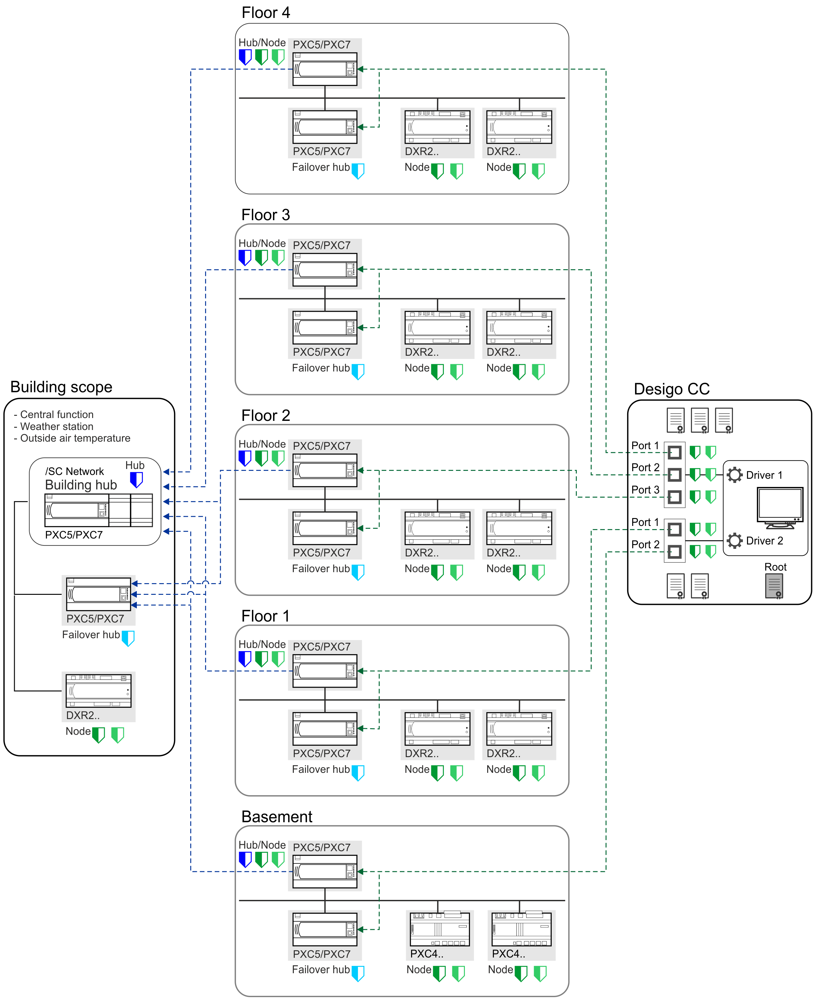
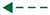
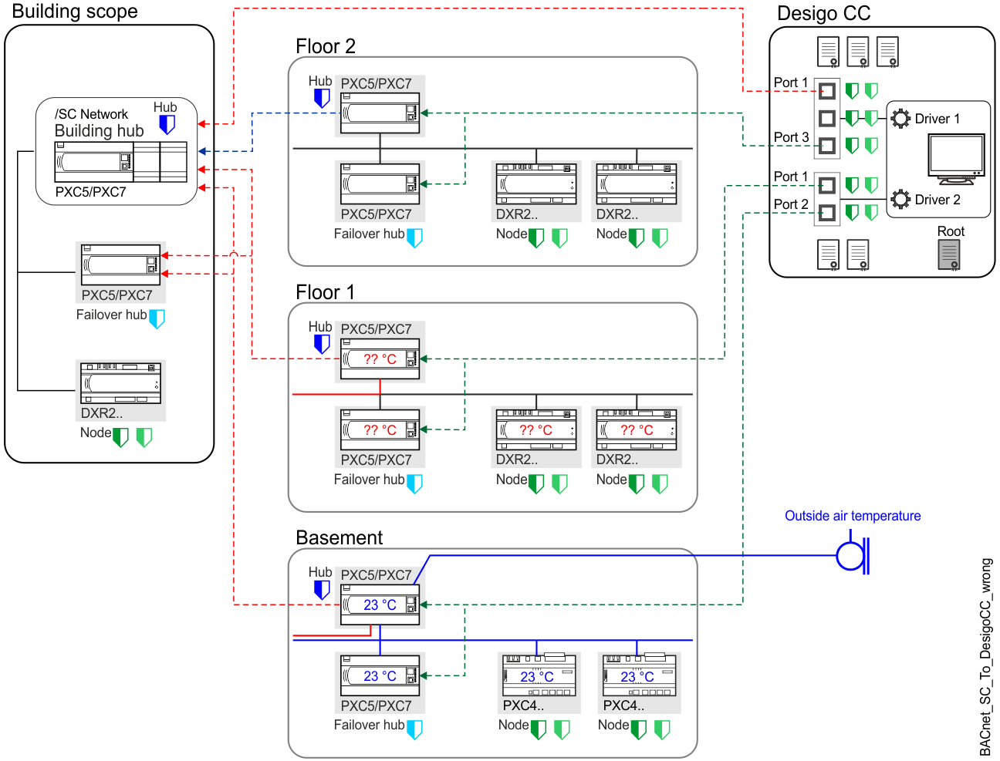

创建带有建筑物和楼层集线器的 BACnet/SC 网络拓扑
BACnet/SC 网络的逻辑拓扑基于中心辐射原则。您需要将节点分配给集线器，以使设备能够在彼此之间传递消息。这种建筑和地板集线器拓扑特别适合大型项目。对于较小的项目，可以选择带有一个集线器的简单扁平结构（一个集线器最多 100 个节点）。
创建 BACnet/SC 网络拓扑需要以下步骤。
- Define which devices will act as building hubs
 , floor hubs
, floor hubs  , failover hubs
, failover hubs  or nodes
or nodes  .
.
Note: Structure the BACnet/SC network according to the traffic on the network. - Assign the nodes to their respective hub and select one of those devices to act as a fail-over hub. Check that the number of nodes per hub is within the limits of 100.
- You can adjust configuration parameters in the properties of each device if required.
What is BACnet Secure Connect?

某些设备类型只能是节点。检查相应的控制器文档以获取更多信息。
- BACnet/SC is supported from PXC4/5/7 version 1.2.
- 从 1.4 版开始支持建筑物和楼层集线器。
- 在创建 BACnet/SC 网络拓扑之前检查您的设备是否有更新。
Updating device versions
Topology of a large BACnet/SC project

NOTICE

Desigo CC 必须直接连接到每个楼层和工厂中心，而不是建筑中心。这避免了所有流量间接通过建筑物中心，并防止建筑物范围中心因流量而过载。
How is the BACnet/SC topology structured?
通常，BACnet/SC 结构将被设置为类似于建筑结构。这简化了未来的调试和维护。为了使通信正常进行，必须遵循一些规则：
- If data exchange is required in different floor networks, they must be connected in a building hub network, e.g. central function, weather station, outside air temperature, human centric lighting.
- Structure the BACnet/SC network in such a way that network traffic can also be reduced.
- Each floor hub has its own BACnet/SC network number.
- Desigo CC requires an individual port for each hub connection.
大楼层可能需要每层多个集线器。

| 描述 |
|---|---|
| 设备是一个集线器。在 BACnet/SC 环境中，名称更改为建筑中心（项目中的一个建筑中心）或楼层中心。功能与集线器相同。 |
| 设备是故障转移集线器。Note：故障转移中心也始终是一个节点。 |
| 设备连接到集线器。 |
| 设备是定义了故障转移中心的节点。 |
 | Desigo CC 链接到所有楼层集线器或故障转移集线器。请勿将 Desigo CC 连接到 Building Hub。 |
楼层枢纽链接至建筑枢纽。 |
How many Desigo CC certificates are needed?
无论如何，根证书和操作证书是使用 Desigo CC 操作的最低要求（参见示例 1）。但根据客户的要求，有多种可能性。
| Hub 1 / Port1 | Hub 2 / Port 2 | Hub 3 / Port 3 | Total of external certificates from ABT Site needed | Recommended file name |
Example 1 |
|
|
|
|
|
| 根(1) | 根 | 根 | 1 | [根服务器] |
| 客户(2) | 客户 | 客户 | 1 | [客户端_服务器] |
Example 2 |
|
|
|
|
|
| 根 | 根 | 根 | 1 | [根服务器] |
| 客户1 | 客户2 | 客户3 | 3 | [客户端_驱动程序？_端口？](3) |
(1) ABT 网站功能Export root certificateto Desigo CC.
(2) ABT 网站功能Sign external CSR用于 Desigo CC 客户端证书。
(3) [client_driver?_port?]=Siemens_DesigoCC_client_driver1_port1
Not allowed hub configurations within BACnet/SC topology
在工程的早期阶段，请注意确保多个网络所需的数据正确分配给建筑中心，例如室外气温、气象站、中央功能等。查找以下不起作用并需要您注意的配置示例：
- The data point measuring outside air temperature cannot share data with other BACnet/SC networks. Data exchange cannot be routed from a BACnet/SC network to another BACnet/SC network through the building hub.
- If Desigo CC is connected to the building hub, there will be traffic overload because all nodes can be reached by Desigo CC.
Notice: Do not connect Desigo CC to the building hub.

Behavior when replacing a device
设备更换始终需要相应设备的新证书。必须遵守以下规定：
- The certificate contains information about the ABT Site project and the device serial number. Thus, the certificate can only be created by the respective project.
- Commissioning must always be carried out with an IP configuration before the BACnet/SC certificates can be loaded.
- A full download is always required the first time to have the BACnet/SC certificate available on the device.
Downloading a control program to a device
The certificates can then be renewed with Only updated certificates.
Downloading an updated certificate to a device - As the private key is stored in ABT Site project data, never make a second certificate signing request (CSR). Otherwise the system will not recognize the private key when receiving the certificate back from the signing authority (first one).
- If you perform a second export by accident, this CSR has to be sent to the signing authority and then later on to be loaded to the device.
如果仍然可以访问失效的设备，请不要忘记正确安全地停用该设备。也就是说，正确删除设备上的证书和任何其他工程数据并将其重置为出厂模式。